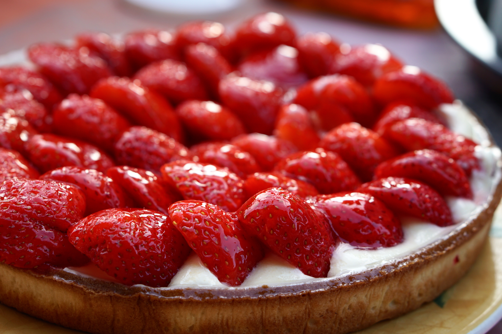

{{product.name}}
{{product.price | currency:"CAD"}}
{{product.description}}
Quantity
Related Products

Sourdough Pan Loaf
Our best seller! The classic Flourist Sourdough Pan Loaf made with 100% Sifted Red Spring Wheat Flour. Perfect for slicing and freezing.

Classic Cookie Bundle
An assortment of our classic cookies for gifting, or as a way to try the best we have to offer.
Blueberry Scone
A delicious scone with blueberry and Whole Grain Red Spring Wheat Flour.

Strawberry + Cream Tart
Our flakey spelt pastry filled with pastry cream and local fresh strawberries.